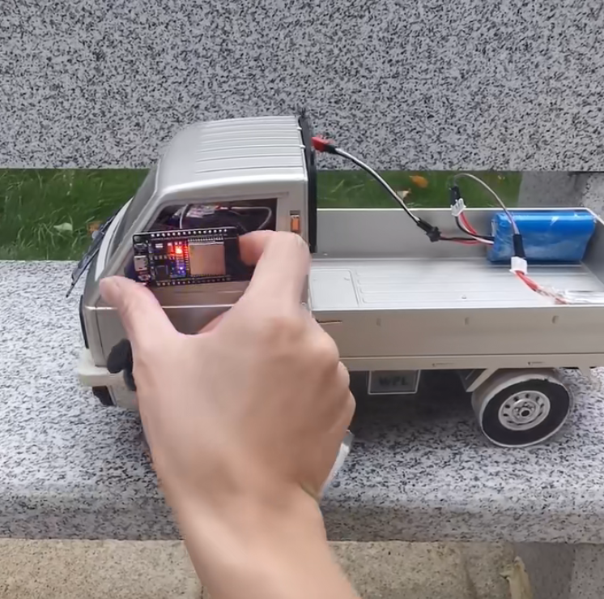

跟清逸折腾硬件之第二版本 esp32控+esp32接收端 (UDP协议，Arduino IDE)

第二个版本，使用esp32创建一个wifi热点，使用另一个esp32(遥控端)连接esp32(接收端)的wifi热点，esp32遥控端读取摇杆中的电位器信号，通过UDP发送给esp32接收端监听的UDP端口。esp32接收端接收到udp包，转换成pwm控制信号，分别控制舵机和电调控制小车。
记得关注我
接线方式
遥控，发送端
esp32连接摇杆
● esp32 D35 连接 摇杆 VRX
● esp32 D34 连接 摇杆 VRY
● esp32 3V3 连接 摇杆 +5V
● esp32 GND（3v3隔壁的GND针脚） 连接 摇杆 GND
esp32连接电源
● esp32 VIN 连接 电压负极 3.7V的1S 或者 5V的正极
● esp32 GND(VIN隔壁的GND针脚) 连接 电源负极
车子端，接收端
电调连接电源（以物料单中的有刷电调为例）(此处可参考第一版本视频中的接法)
● 两黑两红的外侧黑线 接 2S电池(7.4v)的负极
● 两黑两红的外侧红线 接 2S电池(7.4v)的正极
电调连接电机（以物料单中的有刷电调为例）(此处可参考第一版本视频中的接法)
● 中间的窄JST接口黑线 接 电机红线
● 中间的窄JST接口红线 接 电机 黑线
(如果行驶方向相反，可以把这两根线交换连接)
esp32 连接电调
● esp32 VIN 连接 电调三pin排线的红线
● esp32 GND(VIN旁) 连接 电调三pin线的黑线
● 电调3pin线的白线(信号线) 连接 esp32的 D22(半功率)或者D23(满功率)
esp32 连接转向舵机
● 转向舵机3pin线的红色线 连接 esp32的 3V3
● 转向舵机3pin线的棕色线 连接 esp32的 GND(3V3旁)
● 转向舵机3pin线的黄色线 连接 esp32的 D25(半角度) 或者 D26(满角度)
代码部分
发送端 （ESP32）
#include <WiFi.h>
#include <WiFiUdp.h>
// WiFi network name and password:
const char * networkName = "xiaocheche";
const char * networkPswd = "xiaoxiaoche";
const char * udpAddress = "192.168.4.1";
const int udpPort = 8888;
//Are we currently connected?
boolean connected = false;
//The udp library class
WiFiUDP udp;
int LED_BUILTIN = 2;
bool ledShow = false;
int baseX = 0;
int baseY = 0;
// 100的间隙
int gap = 100;
void setup() {
Serial.begin(9600);
baseX = analogRead(35); // X 读取35针脚
baseY = analogRead(34); // Y 读取34针脚
//Connect to the WiFi network
connectToWiFi(networkName, networkPswd);
pinMode(LED_BUILTIN, OUTPUT); // Initialize the LED_BUILTIN pin as an output
}
int MAX = 4096;
int vx = 0;
int vy = 0;
int sendMax = 1024;
int sendHaf = sendMax / 2;
// 输出到频道值 0 - 1024；
int sendx = 0;
int sendy = 0;
int ledLoopTick = -1;
// unsigned long time1 = millis();
// unsigned long lastTickTime = millis();
// the loop function runs over and over again forever
void loop() {
// time1 = millis();
// Serial.printf("tlast: %d \n", time1 - lastTickTime);
// lastTickTime = time1;
vx = analogRead(35);
vy = analogRead(34);
sendx = sendHaf;
sendy = sendHaf;
if (vx > baseX) {
if (vx > baseX + gap) {
sendx = int(float(vx - baseX - gap) / (MAX - baseX - gap) * sendHaf) + sendHaf;
}
} else {
if (vx < baseX - gap) {
sendx = int(float(vx) / float(baseX - gap) * sendHaf);
}
}
if (vy > baseY) {
if (vy > baseY + gap) {
sendy = int(float(vy - baseY - gap) / (MAX - baseY - gap) * sendHaf) + sendHaf;
}
} else {
if (vy < baseY - gap) {
sendy = int(float(vy) / float(baseY - gap) * sendHaf);
}
}
if(connected){
udp.beginPacket(udpAddress,udpPort);
// Serial.printf("\t vx: %d \t vy: %d \t sy: %d \t sy: %d \n", vx, vy, sendx, sendy);
udp.printf("c1:%d,c2:%d", sendx, sendy);
udp.endPacket();
ledLoopTick += 1;
if (ledLoopTick >= 50) {
ledLoopTick = 0;
}
if (ledLoopTick == 0) { // 闪太快看不清，隔50帧闪一次
if (ledShow) {
digitalWrite(LED_BUILTIN, LOW);
ledShow = false;
} else {
digitalWrite(LED_BUILTIN, HIGH);
ledShow = true;
}
}
} else {
ledShow = true;
digitalWrite(LED_BUILTIN, HIGH);
}
delay(1); // 去掉
}
void connectToWiFi(const char * ssid, const char * pwd){
Serial.println("Connecting to WiFi network: " + String(ssid));
// delete old config
WiFi.disconnect(true);
//register event handler
WiFi.onEvent(WiFiEvent);
//Initiate connection
WiFi.begin(ssid, pwd);
Serial.println("Waiting for WIFI connection...");
}
//wifi event handler
void WiFiEvent(WiFiEvent_t event){
switch(event) {
case SYSTEM_EVENT_STA_GOT_IP:
//When connected set
Serial.print("WiFi connected! IP address: ");
Serial.println(WiFi.localIP());
//initializes the UDP state
//This initializes the transfer buffer
udp.begin(WiFi.localIP(),udpPort);
connected = true;
break;
case SYSTEM_EVENT_STA_DISCONNECTED:
Serial.println("WiFi lost connection");
connected = false;
break;
default: break;
}
}
接收端 (ESP32)
#include "WiFi.h"
#include "AsyncUDP.h"
#include <stdio.h>
#ifndef APSSID
#define APSSID "xiaocheche" // 接收机，自动创建热点，wifi 名称
#define APPSK "xiaoxiaoche" // wifi密码
#endif
const char *ssid = APSSID;
const char *password = APPSK;
unsigned int localPort = 8888; // local port to listen on
/**
* 封装舵机的控制类
*/
class LedcServo {
public:
float freq = 50;
int resolution = 8;
float pwmBaseScale;
float pwmMin;
float pwmMax;
int channel;
int scale = 1;
void setup(float freq, int resolution, int channel);
/* 0 < scale <= 1 */
void setScale(float scale);
void attachPin(int pin);
void write(float value, float min, float max);
};
void LedcServo:: setup(float f, int r, int c) {
this->freq = f;
this->resolution = r;
this->pwmBaseScale = this->freq * pow(2, this->resolution) / 1000;
this->pwmMin = 1 * this->pwmBaseScale;
this->pwmMax = 2 * this->pwmBaseScale;
this->channel = c;
ledcSetup(this->channel, this->freq, this->resolution);
}
void LedcServo:: setScale(float s) {
if (s <= 0) throw "s 不能小于等于0";
if (s > 1) throw "s 不能大于1";
this->scale = s;
this->pwmMin = (1.5 - s) * this->pwmBaseScale;
this->pwmMax = (1.5 + s) * this->pwmBaseScale;
}
void LedcServo:: attachPin(int p) {
ledcAttachPin(p, this->channel);
}
void LedcServo:: write(float v, float min, float max) {
ledcWrite(this->channel, map(v, min, max, this->pwmMin, this->pwmMax));
// Serial.println(this->channel);
// Serial.println(v);
}
AsyncUDP udp;
int sendMin = 0;
int sendMax = 1024;
int sendHaf = sendMax / 2;
int rxC1 = sendHaf;
int rxC2 = sendHaf;
int lastRxC1 = sendHaf;
int lastRxC2 = sendHaf;
LedcServo rxC1Servo;
LedcServo rxC1ServoHaf;
LedcServo rxC2Servo;
LedcServo rxC2ServoHaf;
unsigned long timeNow = 0;
unsigned long lastDataTickTime = 0;
int LED_BUILTIN = 2;
bool ledShow = false;
int ledLoopTick = -1;
void setup() {
pinMode(LED_BUILTIN, OUTPUT); // Initialize the LED_BUILTIN pin as an output
digitalWrite(LED_BUILTIN, LOW);
rxC1Servo.setup(100, 10, 8);
rxC1Servo.attachPin(23); // 动力电机控制信号全强度，动力会很猛
rxC1Servo.setScale(1); // 全强度
rxC1Servo.write(0, -1, 1);
rxC1ServoHaf.setup(100, 10, 9);
rxC1ServoHaf.attachPin(22); // 动力电机控制信号一半强度，动力会可控一些
rxC1ServoHaf.setScale(0.3); // 半强度
rxC1ServoHaf.write(0, -1, 1);
rxC2Servo.setup(500, 10, 10);
rxC2Servo.attachPin(26); // 方向舵机信号全强度， 容易侧翻
rxC2Servo.setScale(0.7); // 半角度，顽皮龙D12的转向角最大到这个角度，继续调大，会让舵机在左右两边憋力，最后可能造成舵机齿轮扫坏。
// 其它类型的车辆
rxC2Servo.write(0, -1, 1);
rxC2ServoHaf.setup(500, 10, 11);
rxC2ServoHaf.attachPin(25); // 方向舵机信号一半强度，防止转弯过度
rxC2ServoHaf.setScale(0.3); // 小角度
rxC2ServoHaf.write(0, -1, 1);
Serial.begin(9600);
Serial.println();
Serial.print("Configuring access point...");
/* You can remove the password parameter if you want the AP to be open. */
WiFi.softAP(ssid, password);
IPAddress myIP = WiFi.softAPIP();
Serial.print("AP IP address: ");
Serial.println(myIP);
if(udp.listen(localPort)) {
Serial.print("UDP Listening on IP: ");
Serial.println(WiFi.localIP());
udp.onPacket([](AsyncUDPPacket packet) {
char* str = (char*)packet.data();
str[packet.length()] = 0;
sscanf(str, "c1:%d,c2:%d", &rxC1, &rxC2);
lastDataTickTime = millis();
// Serial.println(str);
ledLoopTick += 1;
if (ledLoopTick >= 50) {
ledLoopTick = 0;
}
if (ledLoopTick == 0) { // 闪太快看不清，隔50帧闪一次
if (ledShow) {
digitalWrite(LED_BUILTIN, LOW);
ledShow = false;
} else {
digitalWrite(LED_BUILTIN, HIGH);
ledShow = true;
}
}
// Serial.print("UDP Packet Type: ");
// Serial.print(packet.isBroadcast()?"Broadcast":packet.isMulticast()?"Multicast":"Unicast");
// Serial.print(", From: ");
// Serial.print(packet.remoteIP());
// Serial.print(":");
// Serial.print(packet.remotePort());
// Serial.print(", To: ");
// Serial.print(packet.localIP());
// Serial.print(":");
// Serial.print(packet.localPort());
// Serial.print(", Length: ");
// Serial.print(packet.length());
// Serial.print(", Data: ");
// Serial.write(packet.data(), packet.length());
// Serial.println();
// //reply to the client
// packet.printf("Got %u bytes of data", packet.length());
});
}
}
void updateServo() {
if (lastRxC1 != rxC1) {
rxC1Servo.write(rxC1, sendMin, sendMax);
rxC1ServoHaf.write(rxC1, sendMin, sendMax);
lastRxC1 = rxC1;
}
if (lastRxC2 != rxC2) {
rxC2Servo.write(rxC2, sendMax, sendMin); // 反向
rxC2ServoHaf.write(rxC2, sendMax, sendMin); // 反向
lastRxC2 = rxC2;
}
}
void loop() {
timeNow = millis();
if (timeNow > lastDataTickTime && timeNow - lastDataTickTime > 1000) {
// 超过1秒未收到数据，自动归中
rxC1 = sendHaf;
rxC2 = sendHaf;
// 点亮灯
digitalWrite(LED_BUILTIN, HIGH);
ledShow = true;
// Serial.println("xxxxxxxxxxxxxxxxxxx");
}
updateServo();
}